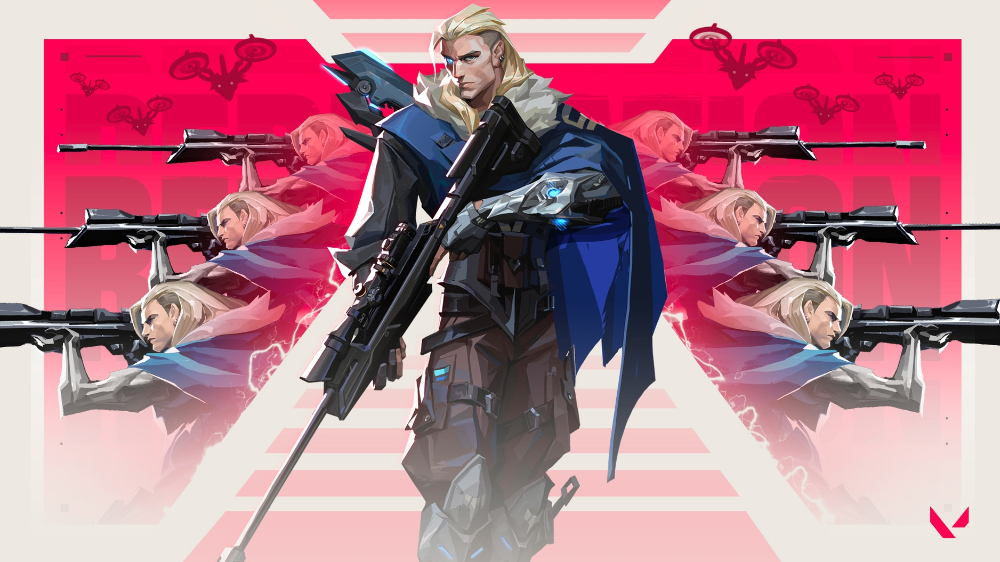

KRAFTON announces pre-registrations for BATTLEGROUNDS MOBILE INDIA Simple seamless process welcomes gaming aficionados across India New Delhi, 18th May 2021 - KRAFTON, the premier South Korean video game developer, today announced pre-registration for BATTLEGROUNDS MOBILE INDIA. Developed by KRAFTON, the pre-registration for the game is now live on Google Play Store for fans in India. Players pre-registering for BATTLEGROUNDS MOBILE INDIA will get 4 amazing rewards, the Recon Mask, the Recon Outfit, Celebration Expert Title, and 300 AG. These rewards are for fans who pre-register, so get ready to dive in and enjoy the battle royale experience on BATTLEGROUNDS with your friends. Players can follow the simple steps to pre-register seamlessly. To pre-register for BATTLEGROUNDS MOBILE INDIA, please visit the Google Play Store Link and click on the “Pre-Register” button, and your rewards will automatically be available to claim on game launch. Set in a virtual world, BATTLEGROUNDS MOBILE INDIA is a battle royale game where multiple players employ strategies to fight and be the last man standing. A free-to-play, multiplayer experience from KRAFTON, players can battle it out in diverse game modes which can be squad-based or even one-on-one. Featuring diverse maps with different terrains on a virtual setting, BATTLEGROUNDS MOBILE INDIA utilizes the full capabilities of Unreal Engine 4 to bring alive fantastic worlds augmented by 3D sound, to build a truly immersive experience on a mobile phone.

Valorant is a team-based first-person hero shooter set in the near future.[2][3][4][5] Players play as one of a set of agents, characters designed based on several countries and cultures around the world.[5] In the main game mode, players are assigned to either the attacking or defending team with each team having five players on it. Agents have unique abilities, each requiring charges, as well as a unique ultimate ability that requires charging through kills, deaths, or spike actions. Every player starts each round with a "classic" pistol and one or more "signature ability" charges.[3] Other weapons and ability charges can be purchased using an in-game economic system that awards money based on the outcome of the previous round, any kills the player is responsible for, and any actions taken with the spike. The game has an assortment of weapons including secondary guns like sidearms and primary guns like submachine guns, shotguns, machine guns, assault rifles and sniper rifles.[6][7] There are automatic and semi-automatic weapons that each have a unique shooting pattern that has to be controlled by the player to be able to shoot accurately.[7] Different agents allow players to find more ways to plant the Spike and style on enemies with scrappers, strategists, and hunters of every description. It currently offers 15 agents to choose from.[8][9] They are Brimstone, Phoenix, Sage, Sova, Viper, Cypher, Reyna, Killjoy, Breach, Omen, Jett, Raze, Skye, Yoru, and Astra.